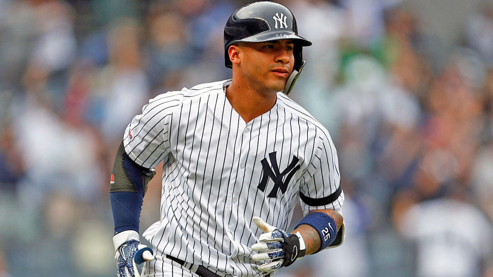
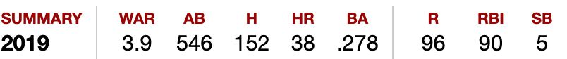

Here is a photo of Gleyber Torres and his 2019 offensive statistics


Gleyber Torres had a breakout year in his 2nd career season, being named to his 2nd straight All-star game. He led the the Yankees, who were two homeruns away from breaking the MLB record, with 38 homeruns. People forget that he is inly 22 years old and will be one of the superstars of the MLB for the next decade. From his rookie year he improved his batting average, hit more homeruns, more RBIs, more runs, and had a higher OPS at .871 which is very impressive for a middle infielder as they are not thought of as guys with power at the plate.